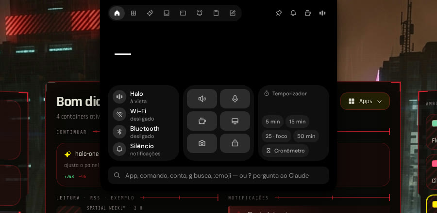
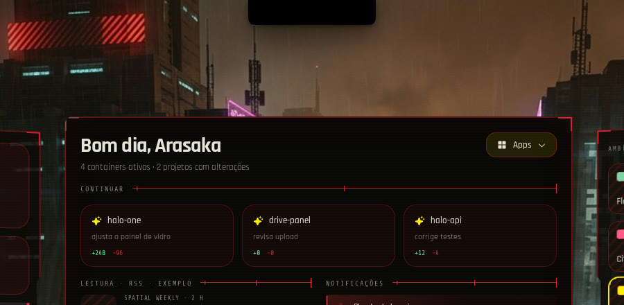

Clique num ambiente — no app, ele troca o tema e o papel de parede da sua sessão.
Painéis flutuando sobre o seu papel de parede, uma ilha dinâmica no topo da tela e ambientes que trocam o tema e o fundo de uma vez. Para KDE Plasma 6.
Clique num ambiente — no app, ele troca o tema e o papel de parede da sua sessão.
Quarenta segundos, sem cortes: a troca de ambiente, a ilha abrindo e cada tela entrando com a animação dela.
Os dados são os seus, lidos daqui mesmo: sem conta, sem servidor, sem nada inventado.
Mora na camada do papel de parede, fora da barra de tarefas. Volta pela bandeja ou por Meta+Espaço.
Música, temporizadores, cópias, Wi-Fi, Bluetooth, captura, texto da tela e um campo que abre apps e roda comandos.
Floresta, City Pop, Cyberpunk e Shock trocam o tema e o papel de parede — imagem ou vídeo.
CPU, memória, GPU e temperatura, com histórico, lidos por um relógio só para não pesar.
Um agente por projeto, com o histórico das conversas e, se quiser, o Genie ou o Clippit reagindo.
Sua lista M3U com sinopse do TMDB, um player que fica por cima, e o seu Spotify.
Containers do Docker, serviços com latência medida e a saúde da máquina.
O mesmo motor da ilha, numa janela vestida pelo ambiente. Desligar devolve a tecla ao Klipper.
Clique para ver de perto.




Uma pílula no topo da tela, sobre o painel do Plasma. Passe o mouse e ela abre — como na imagem ao lado.
? para perguntar ao Claude.Feito para Ubuntu com KDE Plasma 6. Não tenta ser compatível com tudo — e diz o que precisa.
A versão mais recente está em Releases.
Ele puxa o que é essencial e o perfil do AppArmor de que o Electron precisa.
sudo apt install ./halo-spatial-os_0.1.0_amd64.debAbra o Halo pelo menu. Em Configurações → Sistema ele lista cada programa que falta, o que se perde sem ele e o comando para instalar.
| Testado em | Precisa de | |
|---|---|---|
| Distribuição | Ubuntu 26.04.1 LTS | Ubuntu (ou derivado Debian) recente |
| Área de trabalho | KDE Plasma 6.6.6 · KWin 6.6.6 | KDE Plasma 6 |
| Sessão | Wayland, com o app em X11 pelo Xwayland | X11, ou Wayland com Xwayland |
| Vídeo | NVIDIA, driver proprietário | qualquer placa (o medidor de GPU lê NVIDIA) |
| Monitores | mais de um | um ou mais |
Sim, e o código é aberto, sob GPL-3.0. Não há conta, assinatura nem versão paga.
Não. O Halo conversa com o KWin, o Klipper, a bandeja e o painel do Plasma — é feito para KDE Plasma 6. Fora dele o app abre, mas a ilha, o lançador, a bandeja e a troca de papel de parede não funcionam.
Não há telemetria. O Halo lê a sua máquina localmente; sai para a rede só o que você liga: o clima (Open-Meteo), os feeds de notícias que você escolher, as fontes da Social Arte, o TMDB e o Spotify, se configurar as chaves — e as chaves ficam no seu computador.
Quatro coisas, cada uma com interruptor: o papel de parede ao trocar de ambiente (o seu é guardado antes, e um botão o devolve), o efeito da gaveta do KWin e os atalhos, só com a ilha ligada, e o Meta+V, só com o lançador ligado. Desligar desfaz.
Não. Cada integração é opcional: sem ela, a tela diz o que falta e onde configurar, e o resto do app funciona igual.
Antes, desligue a ilha e o lançador em Configurações (isso apaga os atalhos e devolve o Meta+V). Depois, sudo apt remove halo-spatial-os. Suas configurações ficam em ~/.config/halo-spatial-os, se quiser apagar também.
Projetos e trabalhos que mostraram o caminho.
Grátis, aberto, e feito para o Plasma.